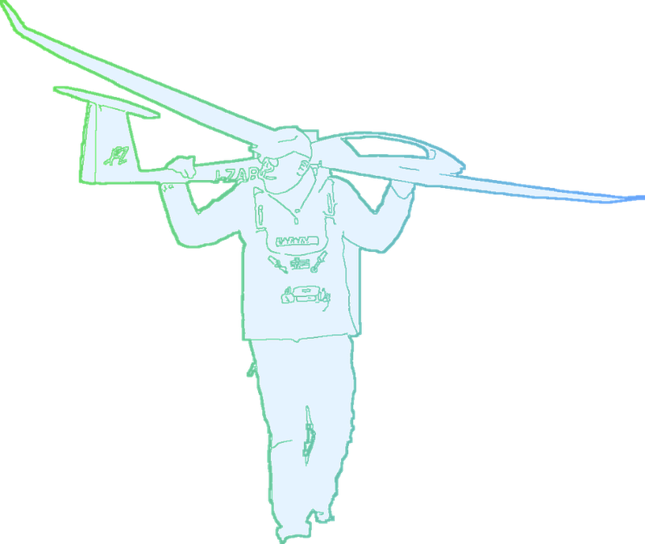

Trascina sul grafico per analizzare un tratto; clic su una salita per il riepilogo; clic su una KPI per aprirla nel grafico.
Usa Dettaglio (in alto a destra) per aumentare la risoluzione delle curve; usa il quadratino colorato accanto a ogni variabile nella legenda per cambiarne il colore.
Nessun report ancora. Vai nella pagina Set up e creane uno con le variabili che ti interessano.
Seleziona da 2 a 4 voli per confrontarli.
In verde il valore migliore di ogni riga.
ƒ = variabile derivata (calcolata dai dati reali)
I report che crei qui compaiono nel menu della pagina Grafico e restano salvati su questo browser. La lista parte vuota: sei tu a definire i grafici che ti servono.
Personalizza i colori principali: le modifiche si applicano subito e restano salvate su questo browser.
Le impostazioni (lingua, aspetto, report, interruttori delle fasi, logo) stanno nella memoria di questo browser. Esportale in un file per non perderle (cambio browser o telefono, reinstallazione dell'app) e importale quando servono. I voli non ne fanno parte: restano nei file dell'archivio.
Indica quale fase corrisponde a ogni posizione degli interruttori della radio (canali "Comando" dei log Jeti). Le barre colorate nei grafici e i tempi per fase usano queste impostazioni.